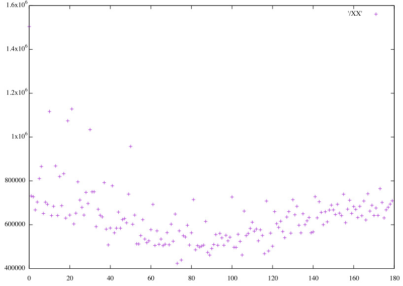

Phobrain
Image Analysis 2 - Angles in Picture Space
Results for various image analysis methods applied
to photos by Bill, Elle, Ellen, and Raf&Skot (N~15000).
Image distance analysis.
Distributions of picture-picture angles
Angles are for difference with respect to the average over all the photos, unless otherwise specified.
2D: 'ab' coordinates of average Lab color (difference vector)

2D: 'ab' coordinates of average Lab color (difference/origin)
2D: 'ab' coordinates of average Lab color
3D: coordinates of average RGB color (difference/origin)
3D: coordinates of average RGB color
4D: Lab 'ab' 2x2 histogram
4D: Hue*Saturation 2x2 histogram
(A 2-bin histogram for hue angle is meaningless for practical purposes, but interesting to compare.)
8D: RGB 2x2x2 histogram
27D: RGB 3x3x3 histogram
64D: RGB 4x4x4 histogram
1,728D: RGB 12x12x12 histogram
13,824D: RGB 24x24x24 histogram
32,768D: RGB 32x32x32 histogram
256D: greyscale histogram
8D: Hue 8 histogram
16D: Hue 16 histogram
64D: Hue 64 histogram
64D: Hue*Saturation 8x8 histogram
578D: Hue*Saturation 24x24 histogram
Software
Lab conversion and distance from formulae on web.
Hue+Sat histograms, Sift, Hog, Surf from BoofCV, Sift/Hog/Surf using a KNN classifier.
Gist distance from OpenIMAJ.
Fractal analysis from IQM.
MultiDimensional Scaling from scikit-learn.
What use to cry for Capricorn? it sails
Across the heart's red atlas: it is found
Only within the ribs, where all the tails
The tempest has are whisking it around.
— Mervyn Peake, Titus Alone